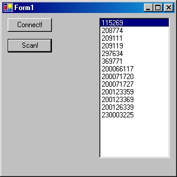

Basic ILR Tutorial For IDENTEC.NET (C#)Disclaimer
By Chris Adamson
Getting started with the IDENTEC SOLUTIONS SDK for the Microsoft® .NET Framework
This article assumes that you are familiar with the Microsoft .NET
Framework 1.1 or 2.0 and that you understand some basic concepts of
Active RFID. Once you are finished this tutorial you can proceed to the
Advanced
ILR Tutorial. For further
reference, please refer to the SDK online help which is part of the
IDENTEC.NET installation package.
This tutorial is designed to walk you through a simple instance of
an ILR program that interacts with IDENTEC SOLUTIONS Inc.® Tags
through your desktop PC. When finished
this tutorial you will be familiar with the following ILR programming
concepts:
using System;Note that the IDENTEC.NET assembly has several namespaces. We are only going to use the Readers and Tags namespaces in this tutorial.
using System.Drawing;
using System.Collections;
using System.ComponentModel;
using System.Windows.Forms;
using System.Data;
// IDENTEC SOLUTIONS Inc. specific:
using IDENTEC;
using IDENTEC.Readers;
using IDENTEC.Tags;
private iCard3 m_iCard3;
public Form1()
{
//
// Required for Windows Form Designer support
//
InitializeComponent();
m_iCard3 = new iCard3();
//
// TODO: Add any constructor code after InitializeComponent call
//
}
private void buttonConnect_Click(object sender, System.EventArgs e)
{
try
{
// Note that we are using the easiest override for Connect(). It's only valid if one card is in the system
// and through the PCMCIA interface.
m_iCard3.Connect();
}
catch (Exception ex)
{
// In practice it is better to catch the different types of exceptions that can be thrown when connecting to the i-CARD 3
// Refer to the SDK's documentation for all of the different types of exceptions that can occur when connecting to an i-CARD 3
MessageBox.Show(ex.Message);
}
}
Now compile and run the program. Fix any build errors or ask for
assistance. If everything is correct then you will be able to connect
to the i-CARD 3 in your machine when
you click the button. You will notice that when you first click the
connect button, the LED’s on the i-CARD 3 will
blink during the connection process.
The i-CARD 3 object will automatically disconnect when the program
exits.
If you do not
have an i-CARD physically inserted in your PC or the driver is not
installed then an exception will be thrown
when your click the connect button.
The real work with the i-CARD 3 is to communicate with tags. Most
often this begins with a scan of the read zone for tags. A scan is the
fastest way to detect multiple tags in a read zone. The reader itself
takes care of all the low-level timing and communication routines and
the SDK helps even further to abstract and enable your application to
access the hardware. This allows you to focus on your business rules
instead of dealing with low-level protocols and timing routines.
In this section you will learn how to identify tags through
scanning. This is sometimes referred to as a Roll call of tags. Scanning for
tags allows you to query the area for tags that
are within read range. A special collection class
named TagCollection
contains the tag objects that are
scanned. This collection can be used as a data source to bind directly
to a control such as a list box.
If no tags are in the read zone or the antenna is disconnected then
the TagCollection returned will
contain 0 tags.
Add a list box to your form in design view and a button for
scanning. Double click the button to create the click handler.
private void buttonScan_Click(object sender, System.EventArgs e)
{
try
{
listBoxTags.DataSource = null;
// Scans the area for up to 64 tags and blinks each tag detected
// Note that there is exactly enough room for 64 tags to respond in this call
// So in reality you would want this number to be more than twice the actual number of
// tags in the read zone.
TagCollection tags = m_iCard3.ScanForIQTags(64, true);
//Sort the tags numerically:
tags.Sort();
listBoxTags.DataSource = tags;
}
catch (Exception ex)
{
MessageBox.Show(ex.Message);
}
}
Sample Screen shot:

You will see most of the tags blink once during the scanning
process; however you may find that not all of the tags in the room
appear in the
list. This is expected! Why?
because we only performed one scan and we haven't optimized the system
for
the actual number of tags in the room or the RF power
settings that are appropriate for your situation. In a production
application you will want to perform several successive scans to build
a list of
tags and possibly change RF output settings for each scan. Some of these concepts are covered
later in the Advanced
ILR Tutorial.
private void buttonPingTag_Click(object sender, System.EventArgs e)
{
try
{
// We have to cast the selected item in the list box to the appropriate ILR object, an iQTag:
iQTag t = listBoxTags.SelectedItem as iQTag;
if (t == null)
{
MessageBox.Show("You must select a tag to ping!");
}
else
{
// Before making the call to ping, we could change the RF output of the i-CARD 3 if we want to change the size of the read zone
if (m_iCard3.PingTag(t))
{
MessageBox.Show("Ping Success!"); // TODO: set a breakpoint here and examine the iQTag object t
}
}
}
catch (Exception ex)
{
MessageBox.Show(ex.Message);
}
}
private void buttonWrite_Click(object sender, System.EventArgs e)
{
try
{
iQTag t = listBoxTags.SelectedItem as iQTag;
if (t == null)
{
MessageBox.Show("You must select a tag to write to!");
}
else
{
TagWriteDataResult result = m_iCard3.WriteTagDataString(t, 132, textBoxWriteData.Text);
if (result.Success)
{
MessageBox.Show("Data written to tag!");
}
}
}
catch (Exception ex)
{
MessageBox.Show(ex.Message);
}
}
private void buttonRead_Click(object sender, System.EventArgs e)
{
try
{
// Clear out the text box so we are sure it gets new data
textBoxRead.Text = "";
iQTag t = listBoxTags.SelectedItem as iQTag;
if (t == null)
{
MessageBox.Show("You must select a tag to read from!");
}
else
{
TagReadStringResult result = m_iCard3.ReadTagDataString(t, 132);
if (result.Success)
{
textBoxRead.Text = result.Text;
}
else
{
// A quick and dirty error message from the reader itself will give us a clue to what went wrong:
MessageBox.Show(m_iCard3.DeviceStatus.ToString(), "Could not read from tag.!");
}
}
}
// TODO: catch the appropriate exceptions such as a data format exception
catch (Exception ex)
{
MessageBox.Show(ex.Message);
}
}
Version 1.1 May 16, 2006
Version 1.0 May 12, 2006